측량및지형공간정보산업기사 (2018-03-04 기출문제)
1과목: 응용측량
1. 선박의 안전통항을 위해 교량 및 가공선의 높이를 결정하고자 할 때 기준면으로 사용되는 것은?
- 기본수준면
- 약최고고조면
- 대조의 평균저조면
- 소조의 평균저조면
(정답률: 66%)

2. 터널측량을 실시할 때 작업순서로 옳은 것은?
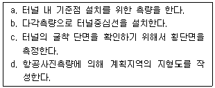
- b → d → a → c
- b → a → d → c
- d → a → c → b
- d → b → a → c
(정답률: 58%)
3. 하천에서 수위 관측소를 설치하고자 할 때 고려하여야 할 사항 중 옳지 않은 것은?
- 상하류의 길이가 약 100m 정도의 직선인 곳
- 합류점이나 분류점으로 수위의 변화가 생기지 않는 곳
- 홍수 시에 관측지점의 유실, 이동 및 파손의 우려가 없는 곳
- 교각이나 기타 구조물에 의해 주변에 비해 수위 변화가 뚜렷히 나타나는 곳
(정답률: 75%)
4. 노선측량의 반향곡선에 대한 설명으로 옳은 것은?
- 원호가 공통접선의 한쪽에 있는 곡선이다.
- 원호의 곡률이 곡선길이에 대하여 일정한 비율로 증가하는 곡선이다.
- 2개의 원호가 공통접선의 양측에 있는 곡선이다.
- 원곡선에 대하여 외측 방향의 높이를 증가시키는 양을 결정하는 곡선이다.
(정답률: 56%)
5. 삼각형(△ABC) 토지의 면적을 구하기 위해 트래버스 측량을 한 결과 배횡거와 위거가 표와 같을 때, 면적은?
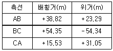
- 4339.06m2
- 2169.53m2
- 1084.93m2
- 783.53m2
(정답률: 49%)
6. 단곡선 설치에서 곡선반지름 R=200m, 교각 I=60°일 때의 외할(E)과 중앙종거(M)는?
- E=30.94m, M=26.79m
- E=26.79m, M=30.94m
- E=30.94m, M=24.78m
- E=24.78m, M=26.79m
(정답률: 60%)
7. 교각 I=80°, 곡선반지름 R=200m인 단곡선의 교점 I.P의 추가거리가 1250.50m일 때 곡선시점 B.C의 추가거리는?
- 1382.68m
- 1282.68m
- 1182.68m
- 1082.68m
(정답률: 60%)
8. 그림과 같은 성토단면을 갖는 도로 50m를 건설하기 위한 성토량은? (단, 성토면의 높이 (h)=5m)
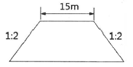
- 5000m3
- 5625m3
- 6250m3
- 7500m3
(정답률: 60%)
9. 해상에 있는 수심측량선의 수평위치결정방법으로 가장 적합한 것은?
- 나침반에 의한 방법
- 평판측량에 의한 방법
- 음향측심기에 의한 방법
- 인공위성(GNSS) 측위에 의한 방법
(정답률: 74%)
10. 수위에 관한 설명을 틀린 것은?
- 저수위는 1년 중 300일은 이보다 저하하지 않는 수위이다.
- 최다수위는 일정 기간 중 제일 많이 발생한 수위이다.
- 평균수위는 어떤 기간의 관측수위의 총합을 관측횟수로 나누어 평균값을 구한 수위이다.
- 평수위는 어떤 기간에 있어서의 수위 중 이것보다 높은 수위와 낮은 수위의 관측횟수가 같은 수위를 의미한다.
(정답률: 76%)
11. 측량원도의 축척이 1 : 1000인 도상에서 부지의 면적이 20.0cm2이었다. 그런데 신축으로 인하여 도면이 가로, 세로 길이가 2%씩 늘어나 있었다면 실면적은 약 얼마인가?
- 1920m2
- 1940m2
- 1960m2
- 1980m2
(정답률: 37%)
12. 그림과 같은 터널에서 AB 사이의 경사가 1/250이고 BC 사이의 경사는 1/100일 때 측점 A와 C 사이의 표고차는?
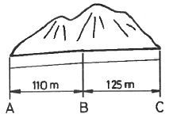
- 1.690m
- 1.645m
- 1.600m
- 1.590m
(정답률: 55%)
13. 1000m3의 체적을 정확하게 계산하려고 한다. 수평 및 수직 거리를 동일한 정확도로 관측하여 체적 계산 오차를 0.5m3 이하로 하기 위한 거리관측의 허용정확도는?
- 1/4000
- 1/5000
- 1/6000
- 1/7000
(정답률: 37%)
14. 반지름 R=500m인 단곡선에서 현길이 ℓ=15m에 대한 편각은?
- 0° 35′ 34″
- 0° 51′ 34″
- 1° 02′ 34″
- 1° 04′ 34″
(정답률: 61%)
15. 완화곡선의 캔트(cant)계산 시 동일한 조건에서 반지름만을 2배로 증가시키면 캔트는?
- 4배로 증가
- 2배로 증가
- 1/2로 감소
- 1/4로 감소
(정답률: 66%)
16. 지형의 체적계산법 중 단면법에 의한 계산법으로 비교적 가장 정확한 결과를 얻을 수 있는 것은?
- 점고법
- 중앙 단면법
- 양 단면 평균법
- 각주공식에 의한 방법
(정답률: 68%)
17. 하천측량에서 수애선 측량에 대한 설명으로 옳지 않은 것은?
- 수애선은 평수위에 따른 경계선이다.
- 수애선은 교호수준측량에 의해 결정된다.
- 수애선은 수면과 하안의 경계선을 말한다.
- 수애선은 동시관측에 의한 방법과 심천측량에 의한 방법이 있다.
(정답률: 57%)
18. 그림과 같이 폭 15m의 도로가 어느 지역을 지나가게 될 때 도로에 포함되는 □BCDE의 넓이는? (단, AC의 방위=N 23° 30′ 00″ E, AD의 방위=S 89° 30′ 00″ E, AB의 거리=20m, ∠ACD=90° 이다.)
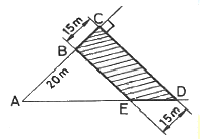
- 971.79m2
- 926.50m2
- 910.12m2
- 893.22m2
(정답률: 42%)
19. 상향기울기가 25/1000, 하향기울기가 -50/1000일 때 곡선반지름이 800m이면 원곡선에 의한 종단곡선의 길이는?
- 85m
- 75m
- 60m
- 55m
(정답률: 53%)
20. 지형과 적절히 조화되는 경관을 창출하기 위한 경관측량의 중요도가 적은 공사는?
- 도로공사
- 상하수도공사
- 대단위 위락시설
- 교량공사
(정답률: 71%)
2과목: 사진측량 및 원격탐사
21. 여러 시기에 걸쳐 수집된 원격탐사 데이터로부터 이상적인 변화탐지 결과를 얻기 위한 가장 중요한 해상도로 옳은 것은?
- 주기 해상도(temporal resolution)
- 방사 해상도(radiometric resolution)
- 공간 해상도(spatial resolution)
- 분광 해상도(spectral resolution)
(정답률: 68%)
22. 편위수정(rectification)을 거친 사진을 집성한 사진지도로 등고선이 삽입되어 있는 것은?
- 중심투영 사진지도
- 약조정 집성 사진지도
- 정사 사진지도
- 조정 집성 사진지도
(정답률: 57%)
23. 완전수직 항공사진의 특수3지점에서의 사진축척을 비교한 것으로 옳은 것은?
- 주점에서 가장 크다.
- 연직점에서 가장 크다.
- 등각점에서 가장 크다.
- 3점에서 모두 같다.
(정답률: 75%)
24. 사진측량은 4차원 측량이 가능한데 다음 중 4차원 측량에 해당하지 않는 것은?
- 거푸집에 대하여 주기적인 촬영으로 변형량을 관측한다.
- 동적인 물체에 대한 시간별 움직임을 체크한다.
- 4가지의 각각 다른 구조물을 동시에 측량한다.
- 용광로의 열변형을 주기적으로 측정한다.
(정답률: 77%)
25. 어느 지역의 영상으로부터 “논”의 훈련지역(training field)을 선택하여 해당 영상소를 “P”로 표기하였다. 이 때 산출되는 통계값과 사변형 분류법(parallelepiped classification)을 이용하여 “논”을 분류한 결과로 옳은 것은?
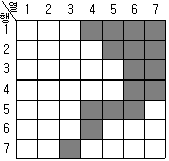
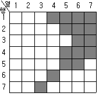
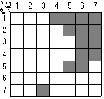
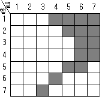
(정답률: 62%)
26. 다음 중 사진의 축척을 결정하는데 고려할 요소로 거리가 먼 것은?
- 사용목적, 사진기의 성능
- 사용되는 사진기, 소요 정밀도
- 도화 축척, 등고선 간격
- 지방적 특색, 기상관계
(정답률: 83%)
27. 지형도와 항공사진으로 대상지의 3차원 좌표를 취득하여 불규칙한 지형을 기하학적으로 재현하고 수치적으로 해석함으로써 경관해석, 노선선정, 택지조성, 환경설계 등에 이용되는 것은?
- 수치지형모델
- 도시정보체계
- 수치정사사진
- 원격탐사
(정답률: 74%)
28. 항공사진측량용 디지털 카메라를 이용한 영상취득에 대한 설명으로 옳지 않은 것은?
- 아날로그 방식보다 필름비용과 처리, 스캐닝 비용 등의 경비가 절감된다.
- 기존 카메라보다 훨씬 더 넓은 피사각으로 대축척 지도제작이 용이하다.
- 높은 방사해상력으로 영상의 질이 우수하다.
- 컬러영상과 다중채널영상의 동시 취득이 가능하다.
(정답률: 53%)
29. 측량용 사진기의 검정자료(calibration data)에 포함되지 않는 것은?
- 주점의 위치
- 초점거리
- 렌즈왜곡량
- 좌표 변환식
(정답률: 59%)
30. 촬영 당시 광속의 기하상태를 재현하는 작업으로 렌즈의 왜곡, 사진의 초점거리 등을 결정하는 작업은?
- 도화
- 지상기준점측량
- 내부표정
- 외부표정
(정답률: 79%)
31. 대공표지의 크기가 사진 상에서 30μm 이상이어야 할 때, 사진축척이 1 : 20000이라면 대공표지의 크기는 최소 얼마 이상이어야 하는가?
- 50cm 이상
- 60cm 이상
- 70cm 이상
- 80cm 이상
(정답률: 65%)
32. 미국의 항공우주국에서 개발하여 1972년에 지구자원탐사를 목적으로 쏘아 올린 위성으로 적도의 조기발견, 대기오염의 확산 및 식물의 발육상태 등을 조사할 수 있는 것은?
- MOSS
- SPOT
- IKONOS
- LANDSAT
(정답률: 71%)
33. 다음 중 원격탐사용 인공위성 플랫폼이 아닌 것은?
- 아리랑위성(KOMPSAT)
- 무궁화위성(KOREASAT)
- Worldview
- GeoEye
(정답률: 62%)
34. 항공사진촬영을 재촬영해야 하는 경우가 아닌 것은?
- 구름, 적설 및 홍수로 인해 지형을 구분할 수 없을 경우
- 촬영코스의 수평이탈이 계획촬영 고도의 10% 이내일 경우
- 촬영 진행 방향의 중복도가 53% 미만이거나 68~77%가 되는 모델이 전 코스의 사진매수의 1/4이상일 경우
- 인접코시간의 중복도가 표고의 최고점에서 5% 미만일 경우
(정답률: 59%)
35. 동서 26km, 남북 8km인 지역을 사진크기 23cm×23cm인 카메라로 종중복도 60%, 횡중복도 30%, 축척 1 : 30000의 항공사진으로 촬영할 때, 입체모델 수는? (단, 엄밀법으로 계산하고 촬영은 동서 방향으로 한다.)
- 16
- 18
- 20
- 22
(정답률: 38%)
36. 항공사진측량을 초점거리 160mm의 카메라로 비행고도 3000m에서 촬영기준면의 표고가 500m인 평지를 촬영할 때의 사진축척은?
- 1 : 15625
- 1 : 16130
- 1 : 18750
- 1 : 19355
(정답률: 55%)
37. 축척 1 : 20,000의 항공사진을 180km/hr의 속도로 촬영하는 경우 허용 흔들림의 범위를 0.01mm로 한다면, 최장 노출 시간은?
- 1/90초
- 1/125초
- 1/180초
- 1/250초
(정답률: 45%)
38. 절대표정에 필요한 지상기준점의 구성으로 틀린 것은?
- 수평기준점(X, Y) 4개
- 지상기준점(X, Y, Z) 3개
- 수평기준점(X, Y) 2개와 수직기준점(Z) 3개
- 지상기준점(X, Y, Z) 2개와 수직기준점(Z) 2개
(정답률: 50%)
39. 다음은 어느 지역 영상에 대해 영상의 화소값 분포를 알아보기 위해 도수분포표를 작성한 것으로 옳은 것은?
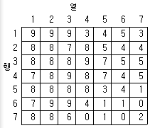
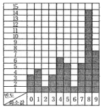
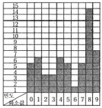
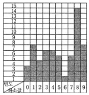
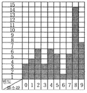
(정답률: 72%)
40. 항공사진의 기복변위에 대한 설명으로 옳지 않은 것은?
- 촬영고도에 비례한다.
- 지형지물의 높이에 비례한다.
- 연직점으로부터 상점까지의 거리에 비례한다.
- 표고차가 있는 물체에 대한 연직점을 중심으로 한 방사상 변위를 의미한다.
(정답률: 58%)
3과목: GIS 및 GPS
41. 수치지형모형(DTM)으로부터 추출할 수 있는 정보로 거리가 먼 것은?
- 경사분석도
- 가시권 분석도
- 사면방향도
- 토지이용도
(정답률: 69%)
42. 래스터자료에 대한 설명으로 틀린 것은?
- 자료구조가 간단하다.
- 다양한 공간분석을 할 수 있다.
- 원격탐사 자료와 연결시키기가 쉽다.
- 그래픽 자료의 양이 적다.
(정답률: 64%)
43. 공간정보 관련 영어 약어에 대한 설명으로 틀린 것은?
- NGIS - 국가지리정보체계
- RIS - 자원정보체계
- UIS - 도시정보체계
- LIS – 교통정보체계
(정답률: 73%)
44. 지리정보시스템(GIS) 소프트웨어의 일반적인 주요 기능으로 거리가 먼 것은?
- 벡터형 공간자료와 래스터형 공간자료의 통합 기능
- 사진, 동영상, 음성 등 멀티미디어 자료의 편집 기능
- 공간자료와 속성자료를 이용한 모델링 기능
- DBMS와 연계한 공간자료 및 속성정보의 관리 기능
(정답률: 67%)
45. GPS 위성신호 L1 및 L2의 주파수를 각각 f1=1575.42MHz, f2=1227.60MHz, 광속(c)을 약 300000km/s라고 가정할 때, wide-lane(Lw=L1-L2) 인공주파수의 파장은?
- 0.19m
- 0.24m
- 0.56m
- 0.86m
(정답률: 30%)
46. 다음 중 지리정보분야의 국제표준화기구는?
- ISO/IT190
- ISO/TC211
- ISO/TC152
- ISO/IT224
(정답률: 74%)
47. 네트워크 RTK 위치결정 방식으로 현재 국토지리정보원에서 운영 중인 시스템 중 하나인 것은?
- TEC(Total Electron Content)
- DGPS(Differential GPS)
- VRS(Virtual Reference Station)
- PPP(Precise Point Positioning)
(정답률: 72%)
48. 벡터데이터모델에 해당하는 것은?
- DWG
- JPG
- shape
- Geotiff
(정답률: 65%)
49. 객체 사이의 인접성, 연결성에 대한 정보를 포함하는 개념은?
- 위치정보
- 속성정보
- 위상정보
- 영상정보
(정답률: 61%)
50. 지리정보시스템(GIS)의 주요 기능에 대한 설명으로 옳지 않은 것은?
- 자료의 입력은 기존 지도와 현지조사자료, 인공위성 등을 통해 얻은 정보 등을 수치형태로 입력하거나 변환하는 것을 말한다.
- 자료의 출력은 자료를 보여주고 분석결과를 사용자에게 알려주는 것을 말한다.
- 자료변환은 지형, 지물과 관련된 사항을 현지에서 직접 조사하는 것을 말한다.
- 데이터베이스 관리에서는 대상물의 위치와 지리적 속성, 그리고 상호 연결성에 대한 정보를 구체화하고 조직화하여야 한다.
(정답률: 74%)
51. 공간 데이터 입력 시 발생할 수 있는 오류가 아닌 것은?
- 스파이크(spike)
- 오버슈트(overshoot)
- 언더슈트(undershoot)
- 톨러런스(tolerance)
(정답률: 78%)
52. 지리정보시스템(GIS)에서 사용하고 있는 공간데이터를 설명하는 또 다른 부가적인 데이터로서 데이터의 생산자, 생산목적, 좌표계 등의 다양한 정보를 담을 수 있는 것은?
- Metadata
- Label
- Annotation
- Coverage
(정답률: 85%)
53. 근접성 분석을 위하여 지정된 요소들 주위에 일정한 폴리곤 구역을 생성해 주는 것은?
- 중첩
- 버퍼링
- 지도 연산
- 네트워크 분석
(정답률: 65%)
54. 다음 중 항공사진측량 시 카메라 투영중심의 위치를 획득(결정)하는 데 가장 효과적인 것은?
- GNSS
- Open GIS
- 토털스테이션
- 레이저고도계
(정답률: 72%)
55. 상대측위(DGPS) 기법 중 하나의 기지점에 수신기를 세워 고정국으로 이용하고 다른 수신기는 측점을 순차적으로 이동하면서 데이터취득과 동시에 위치결정을 하는 방식은?
- Static Surveying
- Real Time kinematic
- Fast Static Surveying
- Point Positioning Surveying
(정답률: 68%)
56. GNSS 측량에서 HDOP와 VDOP가 2.5와 3.2이고 예상되는 관측데이터의 정확도(σ)가 2.7m일 때 예상할 수 있는 수평위치 정확도(σH)와 수직위치 정확도(σV)는?
- σH = 0.93m, σV = 1.19m
- σH = 1.08m, σV = 0.84m
- σH = 5.20m, σV = 5.90m
- σH = 6.75m, σV = 8.64m
(정답률: 37%)
57. 수치지도의 축척에 관한 설명 중 옳지 않은 것은?
- 축척에 따라 자료의 위치정확도가 다르다.
- 축척에 따라 표현되는 정보의 양이 다르다.
- 소축척을 대축척으로 일반화(Generalization)시킬 수 있다.
- 축척 1 : 5000 종이지도로 축척 1 : 1000 수치지도 정확도 구현이 불가능하다.
(정답률: 67%)
58. 지리정보시스템(GIS)의 자료처리 공간분석 방법을 점자료 분석 방법, 선자료 분석 방법, 면자료 분석 방법으로 구분할 때, 선자료 공간분석 방법에 해당되지 않는 것은?
- 최근린 분석
- 네트워크 분석
- 최적경로 분석
- 최단경로 분석
(정답률: 68%)
59. 첫 번째 입력 커버리지 A의 모든 형상들은 그대로 유지하고 커버리지 B의 형상은 커버리지 A안에 있는 형상들만 나타내는 중첩 연산 기능은?
- Union
- Intersection
- Identity
- Clip
(정답률: 57%)
60. 지리적 객체(geographic object)에 해당되지 않는 것은?
- 온도
- 지적필지
- 건물
- 도로
(정답률: 82%)
4과목: 측량학
61. 1 : 50,000 지형도에 표기된 아래와 같은 도엽번호에 대한 설명으로 틀린 것은?
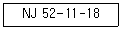
- 1 : 250000 도엽을 28등분한 것 중 18번째 도엽번호를 의미한다.
- N은 북반구를 의미한다.
- J는 적도에서부터 알파벳을 붙인 위도구역을 의미한다.
- 52는 국가 고유 코드를 의미한다.
(정답률: 66%)
62. 다각측량에서 측점 A의 직각좌표(x, y)가 (400m, 400m)이고, AB측선의 길이가 200m일 때, B점의 좌표는? (단, AB측선의 방위각은 225°이다.)
- (300.000m, 300.000m)
- (226.795m, 300.000m)
- (541.421m, 541.421m)
- (258.579m, 258.579m)
(정답률: 54%)
63. 표준길이보다 36mm가 짧은 30m 줄자로 관측한 거리가 480m일 때 실제거리는?
- 479.424m
- 479.856m
- 480.144m
- 480.576m
(정답률: 54%)
64. 삼각형을 이루는 각 점에서 동일한 정밀도로 각 관측을 하였을 때 발생한 폐합 오차의 조정 방법은?
- 3등분하여 조정한다.
- 각의 크기에 비례해서 조정한다.
- 변의 길이에 비례해서 조정한다.
- 각의 크기에 반비례해서 조정한다.
(정답률: 63%)
65. 수평직교좌표원점의 동쪽에 있는 A점에서 B점 방향의 자북방위각을 관측한 결과 88° 10′ 40″이었다. A점에서 자오선 수차가 2′ 20″, 자침 편차가 4°W일 때 방향각은?
- 84° 8′ 20″
- 84° 13′ 00″
- 92° 8′ 20″
- 92° 13′ 00″
(정답률: 49%)
66. 측량에 있어서 부정오차가 일어날 가능성의 확률적 분포 특성에 대한 설명으로 틀린 것은?
- 매우 큰 오차는 거의 생기지 않는다.
- 오차의 발생확률은 최소제곱법에 따른다.
- 큰 오차가 생길 확률은 작은 오차가 생길 확률보다 매우 작다.
- 같은 크기의 양(+)오차와 음(-)오차가 생길 확률은 거의 같다.
(정답률: 64%)
67. A점 및 B점의 좌표가 표와 같고 A점에서 B점까지 결합 다각측량을 하여 계산해 본 결과 합위거가 84.30m, 합경거가 512.62m이었다면 이 측량의 폐합 오차는?
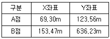
- 0.18m
- 0.14m
- 0.10m
- 0.08m
(정답률: 56%)
68. 토털스테이션의 일반적인 기능이 아닌 것은?
- EDM이 가지고 있는 거리 측정 기능
- 각과 거리 측정에 의한 좌표계산 기능
- 3차원 형상을 스캔하여 체적을 구하는 기능
- 디지털 데오도라이트가 갖고 있는 측각 기능
(정답률: 72%)
69. 수준측량 시 중간점이 많을 경우 가장 적합한 야장기입법은?
- 고차식
- 승강식
- 기고식
- 교호식
(정답률: 65%)
70. 수준측량의 이기점에 대한 설명으로 옳은 것은?
- 표척을 세워서 전시만 읽는 점
- 표고를 알고 있는 점에 표척을 세워 눈금을 읽는 점
- 표척을 세워서 후시와 전시를 읽는 점
- 장애물로 인하여 기계를 옮기는 점
(정답률: 67%)
71. 국토지리정보원에서 발급하는 삼각점에 대한 성과표의 내용이 아닌 것은?
- 경위도
- 점번호
- 직각좌표
- 거리의 대수
(정답률: 70%)
72. 어떤 측량장비의 망원경에 부착된 수준기 기포관의 감도를 결정하기 위해서 D=50m 떨어진 곳에 표척을 수직으로 세우고 수준기의 기포를 중앙에 맞춘 후 읽은 표척 눈금값이 1.00m이고, 망원경을 약간 기울여 기포관상의 눈금 n=6 이동된 상태에서 측정한 표척의 눈금이 1.04m이었다면 이 기포관의 감도는?
- 약 13″
- 약 18″
- 약 23″
- 약 28″
(정답률: 27%)
73. 최소제곱법에 대한 설명으로 옳지 않은 것은?
- 같은 정밀도로 측정된 측정값에서는 오차의 제곱의 합이 최소일 때 최확값을 얻을 수 있다.
- 최소제곱법을 이용하여 정오차를 제거할 수 있다.
- 동일한 거리를 여러 번 관측한 결과를 최소제곱법에 의해 조정한 값은 평균과 같다.
- 최소제곱법의 해법에는 관측방정식과 조건방정식이 있다.
(정답률: 71%)
74. 우리나라 1 : 25000 수치지도에 사용되는 주곡선 간격은?
- 10m
- 20m
- 30m
- 40m
(정답률: 68%)
75. 측량기준점을 크게 3가지로 구분할 때, 그 분류로 옳은 것은?
- 삼각점, 수준점, 지적점
- 위성기준점, 수준점, 삼각점
- 국가기준점, 공공기준점, 지적기준점
- 국가기준점, 공공기준점, 일반기준점
(정답률: 69%)
76. 공공측량의 정의에 대한 설명 중 아래의 “각 호의 측량”에 대한 기준으로 옳지 않은 것은?
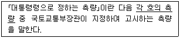
- 측량실시지역의 면적이 1제곱킬로미터 이상인 기준점측량, 지형측량 및 평면측량
- 촬영지역의 면적이 10제곱킬로미터 이상인 측량용 사진의 촬영
- 국토교통부장관이 발행하는 지도의 축척과 같은 축척의 지도 제작
- 인공위성 등에서 취득한 영상정보에 좌표를 부여하기 위한 2차원 또는 3차원의 좌표측량
(정답률: 50%)
77. 측량업을 폐업한 경우에 측량업자는 그 사유가 발생한 날로부터 최대 며칠 이내에 신고하여야 하는가?
- 10일
- 15일
- 20일
- 30일
(정답률: 66%)
78. 측량기술자가 아님에도 불구하고 공간정보의 구축 및 관리 등에 관한 법률에서 정하는 측량(수로측량 제외)을 한 자에 대한 벌칙기준으로 옳은 것은?
- 3년 이하의 징역 또는 3천만원 이하의 벌금
- 2년 이하의 징역 또는 2천만원 이하의 벌금
- 1년 이하의 징역 또는 1천만원 이하의 벌금
- 300만원 이하의 과태료
(정답률: 54%)
79. 국토지리정보원장이 간행하는 지도의 축척이 아닌 것은?
- 1/1000
- 1/1200
- 1/50000
- 1/250000
(정답률: 70%)
80. 일반측량실시의 기초가 될 수 없는 것은?
- 일반측량성과
- 공공측량성과
- 기본측량성과
- 기본측량기록
(정답률: 53%)